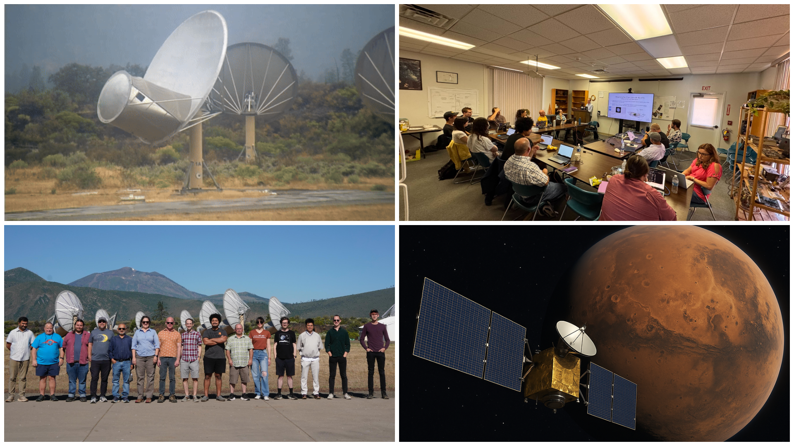

Mars Orbiters - Curriculum Integration - Next Steps

Our final day at Hat Creek began with a dive into one of the most exciting frontiers of SETI: the search for technosignatures. Joel Earwicker introduced the Mars orbiter lab, which uses the ATA to observe signals from active spacecraft around Mars as real-world analogs for detecting artificial signals from beyond Earth. This lab helped frame one of the central challenges in SETI, how to tell if a signal is natural, the result of human activity, or something we can't explain yet.
The morning continued with open time for participants to revisit labs, explore additional tools, or begin developing curriculum plans tailored to their own classrooms. After lunch, the group reconvened for a final session that included a talk from Dr. Sofia Sheikh on how ARISE and the ATA are being integrated into coursework at Foothill College. We then closed the workshop with a reflective discussion on what worked, what could be improved, and where the project should go next. The group offered thoughtful and constructive ideas for improving the curriculum and supporting instructors. We're grateful for their input and excited to carry it forward.